Malasaña
Calle de la Luna, 22 · 28004 Madrid
Tel: 912 133 078
- Martes — Jueves: 13:00–16:30 · 19:30–23:30
- Viernes — Domingo: 13:00–17:00 · 19:30–23:30
- Lunes: Cerrado


Calle de la Luna, 22 · 28004 Madrid
Tel: 912 133 078
C. de San Germán, 5 · 28020 Madrid
Tel: 916 125 714